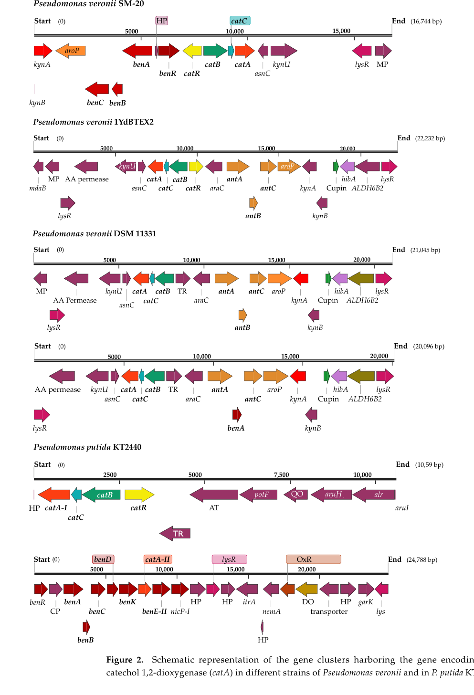

benC encodes the electron-transfer component of the BenABC benzoate 1,2-dioxygenase system. It is a ferredoxin-NAD+ reductase/[2Fe-2S] protein that supplies reducing equivalents to the terminal dioxygenase components, enabling the first hydroxylating step of benzoate catabolism in KT2440.
| GO Term | Evidence | Action | Reason |
|---|---|---|---|
|
GO:0008860
ferredoxin-NAD+ reductase activity
|
IEA
GO_REF:0000003 |
ACCEPT |
Summary: Ferredoxin-NAD+ reductase activity is the specific electron-transfer function assigned to BenC.
Reason: BenC is annotated as the electron-transfer component of benzoate 1,2-dioxygenase and carries the EC-derived ferredoxin-NAD+ reductase function.
Supporting Evidence:
file:PSEPK/benC/benC-uniprot.txt
SubName: Full=Benzoate 1,2-dioxygenase electron transfer component
file:PSEPK/benC/benC-uniprot.txt
DR GO; GO:0008860; F:ferredoxin-NAD+ reductase activity
PMID:11053377
The benABC genes likely encode benzoate dioxygenase
file:PSEPK/benC/benC-deep-research-falcon.md
**BenC functions as the reductase/electron-transfer partner of benzoate 1,2-dioxygenase**, providing electrons (ultimately from NADH/NAD(P)H) to drive the oxygenation of benzoate by the oxygenase component
file:PSEPK/benC/benC-deep-research-falcon.md
the associated **reductase component** is **monomeric** and contains **FAD** and a **plant-type [2Fe-2S]** cluster—i.e., an electron-transfer module consistent with BenC’s role
|
|
GO:0016491
oxidoreductase activity
|
IEA
GO_REF:0000120 |
MARK AS OVER ANNOTATED |
Summary: Oxidoreductase activity is technically compatible with BenC but is too generic compared with ferredoxin-NAD+ reductase activity.
Reason: The specific reductase annotation GO:0008860 captures the actual role, so the broad parent should not be treated as the informative functional annotation.
Supporting Evidence:
file:PSEPK/benC/benC-uniprot.txt
SubName: Full=Benzoate 1,2-dioxygenase electron transfer component
file:PSEPK/benC/benC-uniprot.txt
DR GO; GO:0008860; F:ferredoxin-NAD+ reductase activity
PMID:11053377
The benABC genes likely encode benzoate dioxygenase
file:PSEPK/benC/benC-deep-research-falcon.md
**BenC is the electron-transfer (reductase) component** of the multicomponent benzoate 1,2-dioxygenase system encoded in the **ben gene cluster**
|
|
GO:0018623
benzoate 1,2-dioxygenase activity
|
IEA
GO_REF:0000003 |
ACCEPT |
Summary: BenC contributes electron transfer to the BenABC benzoate 1,2-dioxygenase system, but the complete dioxygenase activity is a complex-level function.
Reason: The contributes_to qualifier is needed because BenC is not the terminal oxygenase subunit; it supports the multicomponent enzyme reaction.
Supporting Evidence:
file:PSEPK/benC/benC-uniprot.txt
SubName: Full=Benzoate 1,2-dioxygenase electron transfer component
file:PSEPK/benC/benC-uniprot.txt
DR GO; GO:0008860; F:ferredoxin-NAD+ reductase activity
PMID:11053377
The benABC genes likely encode benzoate dioxygenase
file:PSEPK/benC/benC-deep-research-falcon.md
BenC** is the **electron transfer component** (reductase) that delivers reducing equivalents required for oxygen activation and substrate dihydroxylation by the oxygenase component
file:PSEPK/benC/benC-deep-research-falcon.md
the **structural genes benABC** encode the initiating benzoate dioxygenase system responsible for benzoate → benzoate diol conversion
|
|
GO:0051536
iron-sulfur cluster binding
|
IEA
GO_REF:0000002 |
MARK AS OVER ANNOTATED |
Summary: Iron-sulfur cluster binding is supported, but the more specific 2 iron, 2 sulfur cluster annotation (GO:0051537) is present and captures the actual [2Fe-2S] cofactor of BenC.
Reason: This is the broad parent of GO:0051537. BenC carries a plant-type [2Fe-2S] cluster, which is captured precisely by GO:0051537, so the generic parent should not be treated as the informative cofactor annotation.
Supporting Evidence:
file:PSEPK/benC/benC-uniprot.txt
Name=[2Fe-2S] cluster
file:PSEPK/benC/benC-deep-research-falcon.md
the associated **reductase component** is **monomeric** and contains **FAD** and a **plant-type [2Fe-2S]** cluster—i.e., an electron-transfer module consistent with BenC’s role
|
|
GO:0051537
2 iron, 2 sulfur cluster binding
|
IEA
GO_REF:0000002 |
ACCEPT |
Summary: A [2Fe-2S] cluster is expected for the electron-transfer component and is explicitly annotated in UniProt.
Reason: The 2Fe-2S cluster is part of BenC electron-transfer chemistry and supports its reductase role.
Supporting Evidence:
file:PSEPK/benC/benC-uniprot.txt
Name=[2Fe-2S] cluster
file:PSEPK/benC/benC-uniprot.txt
DR GO; GO:0051537; F:2 iron, 2 sulfur cluster binding
file:PSEPK/benC/benC-deep-research-falcon.md
an N-terminal **[2Fe-2S] ferredoxin-like domain**, a **FAD-binding domain**, and a C-terminal **NAD(H)-binding domain**
|
|
GO:0043640
benzoate catabolic process via hydroxylation
|
IC
PMID:12534466 Genomic analysis of the aromatic catabolic pathways from Pse... |
NEW |
Summary: BenC supplies reducing equivalents to the BenABC benzoate dioxygenase system, which initiates benzoate catabolism by hydroxylation.
Reason: The ben genes are mapped to benzoate catabolism in KT2440, and BenC is the electron-transfer component of the BenABC hydroxylating dioxygenase.
Supporting Evidence:
PMID:12534466
genes encoding the peripheral pathways for the catabolism of p-hydroxybenzoate (pob), benzoate (ben)
PMID:11053377
The benABC genes likely encode benzoate dioxygenase
file:PSEPK/benC/benC-deep-research-falcon.md
benD** encodes a **benzoate diol dehydrogenase** that converts the benzoate cis-dihydrodiol product into **catechol**
|
|
GO:0050660
flavin adenine dinucleotide binding
|
ISS
file:PSEPK/benC/benC-deep-research-falcon.md |
NEW |
Summary: BenC is the FAD-containing reductase component of benzoate 1,2-dioxygenase; the FAD prosthetic group mediates electron transfer from NAD(P)H to the [2Fe-2S] cluster. This FAD-binding function is not yet captured in the GOA but is well supported by domain architecture and homolog biochemistry.
Reason: BenC contains a dedicated FAD-binding domain (InterPro BenC-like FAD/NAD-binding) and the characterized Acinetobacter ADP1 BenC homolog carries FAD as a redox cofactor. FAD binding (GO:0050660) is a core part of BenC electron-transfer chemistry and is missing from the existing annotations.
Supporting Evidence:
file:PSEPK/benC/benC-deep-research-falcon.md
the associated **reductase component** is **monomeric** and contains **FAD** and a **plant-type [2Fe-2S]** cluster—i.e., an electron-transfer module consistent with BenC’s role
file:PSEPK/benC/benC-deep-research-falcon.md
an N-terminal **[2Fe-2S] ferredoxin-like domain**, a **FAD-binding domain**, and a C-terminal **NAD(H)-binding domain**
|
Q: What are the kinetic electron-transfer parameters between KT2440 BenC and the BenAB oxygenase component?
Suggested experts: Ring-hydroxylating dioxygenase biochemists
Experiment: Reconstitute BenABC with purified BenC and measure NADH-dependent benzoate cis-diol formation while varying BenC concentration and redox-active cluster mutants.
Type: enzyme kinetics assay
The research report should be a detailed narrative explaining the function, biological processes, and localization of the gene product. Citations should be given for all claims.
You should prioritize authoritative reviews and primary scientific literature when conducting research. You can supplement
this with annotations you find in gene/protein databases, but these can be outdated or inaccurate.
We are specifically interested in the primary function of the gene - for enzymes, what reaction is catalyzed, and what is the substrate specificity? For transporters, what is the substrate? For structural proteins or adapters, what is the broader structural role? For signaling molecules, what is the role in the pathway.
We are interested in where in or outside the cell the gene product carries out its function.
We are also interested in the signaling or biochemical pathways in which the gene functions. We are less interested in broad pleiotropic effects, except where these elucidate the precise role.
Include evidence where possible. We are interested in both experimental evidence as well as inference from structure, evolution, or bioinformatic analysis. Precise studies should be prioritized over high-throughput, where available.
The UniProt target Q88I38 corresponds to benC / PP_3163 in Pseudomonas putida strain KT2440 and is functionally associated with the benzoate 1,2-dioxygenase (Ben) peripheral pathway that converts benzoate to catechol. Multiple independent sources converge on the same functional identity: BenC is the electron-transfer (reductase) component of the multicomponent benzoate 1,2-dioxygenase system encoded in the ben gene cluster. (jeffrey1992characterizationofpseudomonas pages 1-1, perezpantoja2008metabolicreconstructionof pages 5-5, zavalameneses2024proteogenomiccharacterizationof pages 8-9)
Aerobic benzoate utilization in many bacteria begins with a ring-hydroxylating dioxygenase that catalyzes dihydroxylation of the aromatic ring to form a non-aromatic cis-dihydrodiol (“benzoate diol”). In Pseudomonas benzoate metabolism, the structural genes benABC encode the initiating benzoate dioxygenase system responsible for benzoate → benzoate diol conversion. (jeffrey1992characterizationofpseudomonas pages 1-1, beharry2002characterizationofanthranilate pages 65-72)
In this system, BenC is the electron transfer component (reductase) that delivers reducing equivalents required for oxygen activation and substrate dihydroxylation by the oxygenase component. (perezpantoja2008metabolicreconstructionof pages 5-5, beharry2002characterizationofanthranilate pages 65-72)
A key concept in aromatic catabolism is modularity: a “peripheral” pathway transforms a specific aromatic compound into a few “central” intermediates (e.g., catechol), which then enter broad central routes (e.g., catechol ortho-cleavage). In P. putida, benD encodes a benzoate diol dehydrogenase that converts the benzoate cis-dihydrodiol product into catechol. (jeffrey1992characterizationofpseudomonas pages 1-1, perezpantoja2008metabolicreconstructionof pages 5-5)
BenC functions as the reductase/electron-transfer partner of benzoate 1,2-dioxygenase, providing electrons (ultimately from NADH/NAD(P)H) to drive the oxygenation of benzoate by the oxygenase component (BenAB in many naming schemes; benABC in the Pseudomonas locus context). (beharry2002characterizationofanthranilate pages 65-72, jeffrey1992characterizationofpseudomonas pages 1-1)
Biochemical characterization of Pseudomonas benzoate 1,2-dioxygenase indicates a multicomponent system in which the oxygenase is an α3β3 complex containing a Rieske-type [2Fe-2S] center and mononuclear iron, while the associated reductase component is monomeric and contains FAD and a plant-type [2Fe-2S] cluster—i.e., an electron-transfer module consistent with BenC’s role. (beharry2002characterizationofanthranilate pages 65-72)
Direct structural/biochemical data for KT2440 Q88I38 itself were not retrieved here; however, a close homolog (Acinetobacter ADP1 BenC) has been structurally and biochemically characterized and exhibits a domain architecture that aligns with UniProt/InterPro expectations for Q88I38: an N-terminal [2Fe-2S] ferredoxin-like domain, a FAD-binding domain, and a C-terminal NAD(H)-binding domain. (beharry2002characterizationofanthranilate pages 99-106, beharry2002characterizationofanthranilate pages 86-93, beharry2002characterizationofanthranilate pages 93-99)
For purified Pseudomonas BenDO activity, the reported stoichiometry for benzoate conversion is NADH:O2:benzoate:benzoate diol = 1:1:1:1, consistent with tightly coupled dioxygenation. (beharry2002characterizationofanthranilate pages 65-72)
Substrate preference described for Pseudomonas benzoate 1,2-dioxygenase includes a preference for meta-substituted benzoates, indicating that while benzoate is the canonical substrate, the enzyme system can accept substituted benzoates with some specificity constraints (system-level behavior, not necessarily unique to BenC). (beharry2002characterizationofanthranilate pages 65-72)
Classic genetic/physiological work in Pseudomonas putida identified mutants unable to catabolize benzoate to catechol, including strains accumulating the cis-diol intermediate. Cloned chromosomal fragments containing benD, benABC, and a regulatory region (benR) complemented benzoate-negative phenotypes and enabled benzoate removal and catechol production, supporting the in vivo role of the ben genes in benzoate-to-catechol conversion. (jeffrey1992characterizationofpseudomonas pages 1-1)
A recent comparative genomics figure (2024) explicitly annotates benA, benB, benC as benzoate 1,2-dioxygenase components (with benC = ferredoxin reductase component) and places these near a catA-II locus in P. putida KT2440, reinforcing the functional coupling between benzoate activation and catechol-processing genes. (zavalameneses2024proteogenomiccharacterizationof media b208bc8e, zavalameneses2024proteogenomiccharacterizationof media 9ae478a3)
No direct subcellular localization experiment for BenC (Q88I38) in KT2440 was retrieved in the evidence assembled here. Based on its role as a soluble reductase/electron-transfer protein supplying electrons to an intracellular dioxygenase system, BenC is most consistent with a cytosolic (intracellular) enzyme associated functionally with the benzoate dioxygenase complex; however, this remains an inference from enzymology and gene-cluster context rather than direct localization evidence. (beharry2002characterizationofanthranilate pages 86-93, beharry2002characterizationofanthranilate pages 65-72, zavalameneses2024proteogenomiccharacterizationof pages 8-9)
In P. putida, BenR is the transcriptional activator required for expression of the benABCD benzoate peripheral pathway genes. (moreno2008thetargetfor pages 1-2, jeffrey1992characterizationofpseudomonas pages 1-1)
A detailed mechanistic study demonstrated that the Crc global regulator controls the benzoate pathway primarily by post-transcriptional repression of benR translation: Crc binds the 5′ region of benR mRNA and reduces BenR protein levels, thereby decreasing activation of the benABCD operon (and thus lowering BenC expression as part of the operon output). (moreno2008thetargetfor pages 2-2, moreno2008thetargetfor pages 5-6, moreno2008thetargetfor pages 1-2)
Quantitative regulatory effects (KT2440 context): in LB + benzoate, the presence of functional Crc represses benA ~70-fold, catB ~80-fold, and pcaI ~240-fold (mRNA-level differences), while benR mRNA is not strongly affected—supporting a translational control mechanism for benR. (moreno2008thetargetfor pages 3-4)
Induction by benzoate: addition of benzoate can induce benA up to ~85-fold and catB ~25-fold in the examined conditions, consistent with strong substrate-responsive activation of peripheral and central catabolic genes once repression is relieved and/or in appropriate growth states. (moreno2008thetargetfor pages 4-5)
Recent synthetic/systems biotechnology work leverages aromatic catabolism modules (including the BenABC/BenD benzoate→catechol route) to channel aromatic substrates toward industrial products such as cis,cis-muconic acid (ccMA), an important nylon/PET-precursor candidate chemical. In engineered Pseudomonas, pathway interventions (e.g., disabling competing catechol cleavage routes and downstream muconate consumption) are used to accumulate ccMA while using aromatic catabolic steps upstream to supply catechol. (He et al., 2023-09-01, https://doi.org/10.1016/j.synbio.2023.08.001) (he2023microbialproductionof pages 3-4)
While BenC (Q88I38) is not singled out biochemically in this 2023 engineering paper, the work illustrates a key real-world implementation: the benzoate dioxygenase module is treated as a reusable metabolic “input” block to supply catechol for downstream production pathways. (he2023microbialproductionof pages 3-4)
A 2024 proteogenomic/comparative genomics analysis of Pseudomonas veronii (with explicit comparison panels including P. putida KT2440) highlights the genomic colocalization and modular organization of ben and cat gene clusters, with explicit annotation of benC as the ferredoxin reductase component. Such studies reflect current practice: integrating genome context and proteomics to infer regulatory coordination and biodegradation capabilities in environmental pseudomonads. (Zavala-Meneses et al., 2024-04, https://doi.org/10.3390/microorganisms12040753) (zavalameneses2024proteogenomiccharacterizationof pages 8-9, zavalameneses2024proteogenomiccharacterizationof media 9ae478a3)
The table below summarizes the strongest evidence about BenC Q88I38, clearly separating KT2440-specific evidence from homolog-based inference.
| Aspect | Key points | Evidence/citation IDs |
|---|---|---|
| Identity | Target verified: UniProt Q88I38 = benC / PP_3163 in Pseudomonas putida KT2440; corresponds to the benzoate 1,2-dioxygenase electron-transfer component in the chromosomal benzoate-catabolic locus. | (perezpantoja2008metabolicreconstructionof pages 5-5, jeffrey1992characterizationofpseudomonas pages 1-1, zavalameneses2024proteogenomiccharacterizationof pages 8-9) |
| Enzyme system role | In P. putida, benABC encode the multicomponent benzoate dioxygenase that initiates benzoate oxidation; BenC is the electron-transfer/reductase partner that supplies reducing equivalents to the oxygenase component. | (beharry2002characterizationofanthranilate pages 65-72, jeffrey1992characterizationofpseudomonas pages 1-1, moreno2008thetargetfor pages 1-2) |
| Reaction step | Pathway placement: benzoate → cis-dihydrodiol (benzoate diol) via BenABC/BenC system → catechol via BenD; this is the peripheral entry route into central catechol metabolism. | (perezpantoja2008metabolicreconstructionof pages 5-5, jeffrey1992characterizationofpseudomonas pages 1-1) |
| Cofactors/domains | Homolog-based structural inference (Acinetobacter ADP1 BenC): monomeric reductase with N-terminal plant-type [2Fe-2S] ferredoxin domain, FAD-binding domain, and C-terminal NAD(H)-binding domain; this matches UniProt/InterPro domain expectations for Q88I38. | (beharry2002characterizationofanthranilate pages 99-106, beharry2002characterizationofanthranilate pages 86-93, beharry2002characterizationofanthranilate pages 93-99) |
| Subunit architecture | P. putida enzyme-system architecture: oxygenase component is α3β3 with Rieske [2Fe-2S] centers and mononuclear iron; reductase component is monomeric and contains FAD + plant-type [2Fe-2S]. BenC corresponds to that monomeric reductase/electron-transfer component. | (beharry2002characterizationofanthranilate pages 65-72, beharry2002characterizationofanthranilate pages 99-106, beharry2002characterizationofanthranilate pages 86-93) |
| Localization inference | No direct localization experiment for KT2440 BenC was retrieved; available evidence supports intracellular/cytosolic function as a soluble reductase acting with the benzoate dioxygenase complex in aromatic catabolism. This is an inference from enzyme biochemistry and gene-cluster context, not direct localization data. | (beharry2002characterizationofanthranilate pages 86-93, beharry2002characterizationofanthranilate pages 65-72, zavalameneses2024proteogenomiccharacterizationof pages 8-9) |
| Gene-cluster context | A 2024 comparative figure places benR-benA-benB-benC adjacent to a catA-II region in P. putida KT2440, reinforcing linkage of benzoate activation with downstream catechol cleavage genes. | (zavalameneses2024proteogenomiccharacterizationof media b208bc8e, zavalameneses2024proteogenomiccharacterizationof media 9ae478a3) |
| Regulation | In KT2440, BenR activates the benABCD benzoate peripheral pathway; the global regulator Crc represses benzoate utilization indirectly by inhibiting benR translation, thereby lowering benABCD expression. This regulates BenC expression as part of the operon-level output. | (moreno2008thetargetfor pages 4-5, moreno2008thetargetfor pages 2-2, moreno2008thetargetfor pages 5-6, moreno2008thetargetfor pages 1-2) |
| Quantitative parameters | Direct P. putida system data: benzoate dioxygenase stoichiometry reported as NADH:O2:benzoate:benzoate diol = 1:1:1:1; Pseudomonas BenDO shows preference for meta-substituted benzoates. Homolog-based BenC kinetics (Acinetobacter ADP1): ~0.9 mol FAD/mol protein, 1.9 ± 0.5 mol Fe/mol monomer, Km(BenAB–BenC) ~32 µM, kcat ~5800 min⁻1; one source notes P. putida BenDO turnover ~22,000 min⁻1 and reported BenAB–BenC Km ~26 µM. | (beharry2002characterizationofanthranilate pages 86-93, beharry2002characterizationofanthranilate pages 65-72, beharry2002characterizationofanthranilate pages 93-99) |
| Experimental support in P. putida genetics | Classic mutant/complementation work showed that benzoate-catabolism defects map to benABC/benD/benR functions; expression of cloned chromosomal fragments restored benzoate removal and catechol production, supporting the physiological role of the ben pathway in vivo. | (jeffrey1992characterizationofpseudomonas pages 1-1) |
| Recent applications/research context | 2023–2024 application context: engineered Pseudomonas strains exploit the benzoate → catechol route to funnel aromatics into cis,cis-muconic acid production; recent comparative genomics/proteogenomics in environmental pseudomonads also highlight ben/cat gene clustering for aromatic biodegradation. These studies usually discuss the pathway at operon/system level rather than Q88I38 specifically. | (he2023microbialproductionof pages 3-4, zavalameneses2024proteogenomiccharacterizationof pages 6-8, zavalameneses2024proteogenomiccharacterizationof pages 8-9) |
Table: This table condenses the strongest available evidence for BenC (Q88I38/PP_3163) in Pseudomonas putida KT2440, separating direct KT2440 evidence from homolog-based structural inference. It highlights pathway role, regulation, quantitative data, and recent biotechnological context.
References
(jeffrey1992characterizationofpseudomonas pages 1-1): W. Jeffrey, M. Stephen, Cuskey, J. Peter, Chapman, Sol Resnick, and Ronald H. Olsen. Characterization of pseudomonas putida mutants unable to catabolize benzoate: cloning and characterization of pseudomonas genes involved in benzoate catabolism and isolation of a chromosomal dna fragment able to substitute for xyls in activation of the tol lower-pathway promoter. Journal of Bacteriology, 174:4986-4996, Aug 1992. URL: https://doi.org/10.1128/jb.174.15.4986-4996.1992, doi:10.1128/jb.174.15.4986-4996.1992. This article has 71 citations and is from a peer-reviewed journal.
(perezpantoja2008metabolicreconstructionof pages 5-5): D. Pérez-Pantoja, R. De la Iglesia, D. Pieper, and B. González. Metabolic reconstruction of aromatic compounds degradation from the genome of the amazing pollutant-degrading bacterium cupriavidus necator jmp134. FEMS microbiology reviews, 32 5:736-94, Aug 2008. URL: https://doi.org/10.1111/j.1574-6976.2008.00122.x, doi:10.1111/j.1574-6976.2008.00122.x. This article has 295 citations and is from a domain leading peer-reviewed journal.
(zavalameneses2024proteogenomiccharacterizationof pages 8-9): Sofía G. Zavala-Meneses, Andrea Firrincieli, Petra Chalova, Petr Pajer, Alice Checcucci, Ludovit Skultety, and Martina Cappelletti. Proteogenomic characterization of pseudomonas veronii sm-20 growing on phenanthrene as only carbon and energy source. Apr 2024. URL: https://doi.org/10.3390/microorganisms12040753, doi:10.3390/microorganisms12040753. This article has 9 citations.
(beharry2002characterizationofanthranilate pages 65-72): ZM Beharry. Characterization of anthranilate and benzoate 1, 2-dioxygenase from acinetobacter sp. strain adp1. Unknown journal, 2002.
(beharry2002characterizationofanthranilate pages 99-106): ZM Beharry. Characterization of anthranilate and benzoate 1, 2-dioxygenase from acinetobacter sp. strain adp1. Unknown journal, 2002.
(beharry2002characterizationofanthranilate pages 86-93): ZM Beharry. Characterization of anthranilate and benzoate 1, 2-dioxygenase from acinetobacter sp. strain adp1. Unknown journal, 2002.
(beharry2002characterizationofanthranilate pages 93-99): ZM Beharry. Characterization of anthranilate and benzoate 1, 2-dioxygenase from acinetobacter sp. strain adp1. Unknown journal, 2002.
(zavalameneses2024proteogenomiccharacterizationof media b208bc8e): Sofía G. Zavala-Meneses, Andrea Firrincieli, Petra Chalova, Petr Pajer, Alice Checcucci, Ludovit Skultety, and Martina Cappelletti. Proteogenomic characterization of pseudomonas veronii sm-20 growing on phenanthrene as only carbon and energy source. Apr 2024. URL: https://doi.org/10.3390/microorganisms12040753, doi:10.3390/microorganisms12040753. This article has 9 citations.
(zavalameneses2024proteogenomiccharacterizationof media 9ae478a3): Sofía G. Zavala-Meneses, Andrea Firrincieli, Petra Chalova, Petr Pajer, Alice Checcucci, Ludovit Skultety, and Martina Cappelletti. Proteogenomic characterization of pseudomonas veronii sm-20 growing on phenanthrene as only carbon and energy source. Apr 2024. URL: https://doi.org/10.3390/microorganisms12040753, doi:10.3390/microorganisms12040753. This article has 9 citations.
(moreno2008thetargetfor pages 1-2): Renata Moreno and Fernando Rojo. The target for the pseudomonas putida crc global regulator in the benzoate degradation pathway is the benr transcriptional regulator. Mar 2008. URL: https://doi.org/10.1128/jb.01604-07, doi:10.1128/jb.01604-07. This article has 120 citations and is from a peer-reviewed journal.
(moreno2008thetargetfor pages 2-2): Renata Moreno and Fernando Rojo. The target for the pseudomonas putida crc global regulator in the benzoate degradation pathway is the benr transcriptional regulator. Mar 2008. URL: https://doi.org/10.1128/jb.01604-07, doi:10.1128/jb.01604-07. This article has 120 citations and is from a peer-reviewed journal.
(moreno2008thetargetfor pages 5-6): Renata Moreno and Fernando Rojo. The target for the pseudomonas putida crc global regulator in the benzoate degradation pathway is the benr transcriptional regulator. Mar 2008. URL: https://doi.org/10.1128/jb.01604-07, doi:10.1128/jb.01604-07. This article has 120 citations and is from a peer-reviewed journal.
(moreno2008thetargetfor pages 3-4): Renata Moreno and Fernando Rojo. The target for the pseudomonas putida crc global regulator in the benzoate degradation pathway is the benr transcriptional regulator. Mar 2008. URL: https://doi.org/10.1128/jb.01604-07, doi:10.1128/jb.01604-07. This article has 120 citations and is from a peer-reviewed journal.
(moreno2008thetargetfor pages 4-5): Renata Moreno and Fernando Rojo. The target for the pseudomonas putida crc global regulator in the benzoate degradation pathway is the benr transcriptional regulator. Mar 2008. URL: https://doi.org/10.1128/jb.01604-07, doi:10.1128/jb.01604-07. This article has 120 citations and is from a peer-reviewed journal.
(he2023microbialproductionof pages 3-4): Siyang He, Weiwei Wang, Weidong Wang, Haiyang Hu, Ping Xu, and Hongzhi Tang. Microbial production of cis,cis-muconic acid from aromatic compounds in engineered pseudomonas. Sep 2023. URL: https://doi.org/10.1016/j.synbio.2023.08.001, doi:10.1016/j.synbio.2023.08.001. This article has 12 citations.
(zavalameneses2024proteogenomiccharacterizationof pages 6-8): Sofía G. Zavala-Meneses, Andrea Firrincieli, Petra Chalova, Petr Pajer, Alice Checcucci, Ludovit Skultety, and Martina Cappelletti. Proteogenomic characterization of pseudomonas veronii sm-20 growing on phenanthrene as only carbon and energy source. Apr 2024. URL: https://doi.org/10.3390/microorganisms12040753, doi:10.3390/microorganisms12040753. This article has 9 citations.

id: Q88I38
gene_symbol: benC
product_type: PROTEIN
status: DRAFT
taxon:
id: NCBITaxon:160488
label: Pseudomonas putida (strain ATCC 47054 / DSM 6125 / CFBP 8728 / NCIMB 11950 / KT2440)
description: benC encodes the electron-transfer component of the BenABC benzoate 1,2-dioxygenase system.
It is a ferredoxin-NAD+ reductase/[2Fe-2S] protein that supplies reducing equivalents to the terminal
dioxygenase components, enabling the first hydroxylating step of benzoate catabolism in KT2440.
existing_annotations:
- term:
id: GO:0008860
label: ferredoxin-NAD+ reductase activity
evidence_type: IEA
original_reference_id: GO_REF:0000003
review:
summary: Ferredoxin-NAD+ reductase activity is the specific electron-transfer function assigned to
BenC.
action: ACCEPT
reason: BenC is annotated as the electron-transfer component of benzoate 1,2-dioxygenase and carries
the EC-derived ferredoxin-NAD+ reductase function.
supported_by:
- reference_id: file:PSEPK/benC/benC-uniprot.txt
supporting_text: 'SubName: Full=Benzoate 1,2-dioxygenase electron transfer component'
- reference_id: file:PSEPK/benC/benC-uniprot.txt
supporting_text: DR GO; GO:0008860; F:ferredoxin-NAD+ reductase activity
- reference_id: PMID:11053377
supporting_text: The benABC genes likely encode benzoate dioxygenase
reference_section_type: ABSTRACT
- reference_id: file:PSEPK/benC/benC-deep-research-falcon.md
supporting_text: |-
**BenC functions as the reductase/electron-transfer partner of benzoate 1,2-dioxygenase**, providing electrons (ultimately from NADH/NAD(P)H) to drive the oxygenation of benzoate by the oxygenase component
reference_section_type: OTHER
- reference_id: file:PSEPK/benC/benC-deep-research-falcon.md
supporting_text: |-
the associated **reductase component** is **monomeric** and contains **FAD** and a **plant-type [2Fe-2S]** cluster—i.e., an electron-transfer module consistent with BenC’s role
reference_section_type: OTHER
- term:
id: GO:0016491
label: oxidoreductase activity
evidence_type: IEA
original_reference_id: GO_REF:0000120
review:
summary: Oxidoreductase activity is technically compatible with BenC but is too generic compared with
ferredoxin-NAD+ reductase activity.
action: MARK_AS_OVER_ANNOTATED
reason: The specific reductase annotation GO:0008860 captures the actual role, so the broad parent
should not be treated as the informative functional annotation.
supported_by:
- reference_id: file:PSEPK/benC/benC-uniprot.txt
supporting_text: 'SubName: Full=Benzoate 1,2-dioxygenase electron transfer component'
- reference_id: file:PSEPK/benC/benC-uniprot.txt
supporting_text: DR GO; GO:0008860; F:ferredoxin-NAD+ reductase activity
- reference_id: PMID:11053377
supporting_text: The benABC genes likely encode benzoate dioxygenase
reference_section_type: ABSTRACT
- reference_id: file:PSEPK/benC/benC-deep-research-falcon.md
supporting_text: |-
**BenC is the electron-transfer (reductase) component** of the multicomponent benzoate 1,2-dioxygenase system encoded in the **ben gene cluster**
reference_section_type: OTHER
- term:
id: GO:0018623
label: benzoate 1,2-dioxygenase activity
evidence_type: IEA
original_reference_id: GO_REF:0000003
review:
summary: BenC contributes electron transfer to the BenABC benzoate 1,2-dioxygenase system, but the
complete dioxygenase activity is a complex-level function.
action: ACCEPT
reason: The contributes_to qualifier is needed because BenC is not the terminal oxygenase subunit;
it supports the multicomponent enzyme reaction.
supported_by:
- reference_id: file:PSEPK/benC/benC-uniprot.txt
supporting_text: 'SubName: Full=Benzoate 1,2-dioxygenase electron transfer component'
- reference_id: file:PSEPK/benC/benC-uniprot.txt
supporting_text: DR GO; GO:0008860; F:ferredoxin-NAD+ reductase activity
- reference_id: PMID:11053377
supporting_text: The benABC genes likely encode benzoate dioxygenase
reference_section_type: ABSTRACT
- reference_id: file:PSEPK/benC/benC-deep-research-falcon.md
supporting_text: |-
BenC** is the **electron transfer component** (reductase) that delivers reducing equivalents required for oxygen activation and substrate dihydroxylation by the oxygenase component
reference_section_type: OTHER
- reference_id: file:PSEPK/benC/benC-deep-research-falcon.md
supporting_text: |-
the **structural genes benABC** encode the initiating benzoate dioxygenase system responsible for benzoate → benzoate diol conversion
reference_section_type: OTHER
qualifier: contributes_to
- term:
id: GO:0051536
label: iron-sulfur cluster binding
evidence_type: IEA
original_reference_id: GO_REF:0000002
review:
summary: Iron-sulfur cluster binding is supported, but the more specific 2 iron, 2 sulfur cluster
annotation (GO:0051537) is present and captures the actual [2Fe-2S] cofactor of BenC.
action: MARK_AS_OVER_ANNOTATED
reason: This is the broad parent of GO:0051537. BenC carries a plant-type [2Fe-2S] cluster, which
is captured precisely by GO:0051537, so the generic parent should not be treated as the informative
cofactor annotation.
supported_by:
- reference_id: file:PSEPK/benC/benC-uniprot.txt
supporting_text: Name=[2Fe-2S] cluster
- reference_id: file:PSEPK/benC/benC-deep-research-falcon.md
supporting_text: |-
the associated **reductase component** is **monomeric** and contains **FAD** and a **plant-type [2Fe-2S]** cluster—i.e., an electron-transfer module consistent with BenC’s role
reference_section_type: OTHER
- term:
id: GO:0051537
label: 2 iron, 2 sulfur cluster binding
evidence_type: IEA
original_reference_id: GO_REF:0000002
review:
summary: A [2Fe-2S] cluster is expected for the electron-transfer component and is explicitly annotated
in UniProt.
action: ACCEPT
reason: The 2Fe-2S cluster is part of BenC electron-transfer chemistry and supports its reductase
role.
supported_by:
- reference_id: file:PSEPK/benC/benC-uniprot.txt
supporting_text: Name=[2Fe-2S] cluster
- reference_id: file:PSEPK/benC/benC-uniprot.txt
supporting_text: DR GO; GO:0051537; F:2 iron, 2 sulfur cluster binding
- reference_id: file:PSEPK/benC/benC-deep-research-falcon.md
supporting_text: |-
an N-terminal **[2Fe-2S] ferredoxin-like domain**, a **FAD-binding domain**, and a C-terminal **NAD(H)-binding domain**
reference_section_type: OTHER
- term:
id: GO:0043640
label: benzoate catabolic process via hydroxylation
evidence_type: IC
original_reference_id: PMID:12534466
review:
summary: BenC supplies reducing equivalents to the BenABC benzoate dioxygenase system, which initiates
benzoate catabolism by hydroxylation.
action: NEW
reason: The ben genes are mapped to benzoate catabolism in KT2440, and BenC is the electron-transfer
component of the BenABC hydroxylating dioxygenase.
supported_by:
- reference_id: PMID:12534466
supporting_text: genes encoding the peripheral pathways for the catabolism of p-hydroxybenzoate
(pob), benzoate (ben)
reference_section_type: ABSTRACT
- reference_id: PMID:11053377
supporting_text: The benABC genes likely encode benzoate dioxygenase
reference_section_type: ABSTRACT
- reference_id: file:PSEPK/benC/benC-deep-research-falcon.md
supporting_text: |-
benD** encodes a **benzoate diol dehydrogenase** that converts the benzoate cis-dihydrodiol product into **catechol**
reference_section_type: OTHER
- term:
id: GO:0050660
label: flavin adenine dinucleotide binding
evidence_type: ISS
original_reference_id: file:PSEPK/benC/benC-deep-research-falcon.md
review:
summary: BenC is the FAD-containing reductase component of benzoate 1,2-dioxygenase; the FAD prosthetic
group mediates electron transfer from NAD(P)H to the [2Fe-2S] cluster. This FAD-binding function
is not yet captured in the GOA but is well supported by domain architecture and homolog biochemistry.
action: NEW
reason: BenC contains a dedicated FAD-binding domain (InterPro BenC-like FAD/NAD-binding) and the
characterized Acinetobacter ADP1 BenC homolog carries FAD as a redox cofactor. FAD binding (GO:0050660)
is a core part of BenC electron-transfer chemistry and is missing from the existing annotations.
supported_by:
- reference_id: file:PSEPK/benC/benC-deep-research-falcon.md
supporting_text: |-
the associated **reductase component** is **monomeric** and contains **FAD** and a **plant-type [2Fe-2S]** cluster—i.e., an electron-transfer module consistent with BenC’s role
reference_section_type: OTHER
- reference_id: file:PSEPK/benC/benC-deep-research-falcon.md
supporting_text: |-
an N-terminal **[2Fe-2S] ferredoxin-like domain**, a **FAD-binding domain**, and a C-terminal **NAD(H)-binding domain**
reference_section_type: OTHER
references:
- id: GO_REF:0000002
title: Gene Ontology annotation through association of InterPro records with GO terms
findings:
- statement: InterPro identifies broad oxidoreductase and iron-sulfur features that require term-specific
review.
- id: GO_REF:0000003
title: Gene Ontology annotation based on Enzyme Commission mapping
findings:
- statement: EC mappings identify ferredoxin-NAD+ reductase and contribution to benzoate dioxygenase
activity.
- id: GO_REF:0000120
title: Combined automated GO annotation using multiple IEA methods
findings:
- statement: Combined automated methods supplied broad oxidoreductase support that requires review
against the specific BenC reductase activity.
- id: file:PSEPK/benC/benC-uniprot.txt
title: UniProtKB entry for benC
findings:
- statement: UniProt identifies BenC as the electron-transfer component of benzoate 1,2-dioxygenase
with ferredoxin-NAD+ reductase and 2Fe-2S annotations.
- id: PMID:11053377
title: BenR, a XylS homologue, regulates three different pathways of aromatic acid degradation
in Pseudomonas putida.
findings:
- statement: The abstract identifies benABC as likely encoding benzoate dioxygenase genes.
- id: PMID:12534466
title: Genomic analysis of the aromatic catabolic pathways from Pseudomonas putida KT2440
findings:
- statement: KT2440 pathway mapping places the ben genes in benzoate catabolism.
- id: file:PSEPK/benC/benC-deep-research-falcon.md
title: 'Falcon (Edison Scientific) deep research report: benC (PP_3163; UniProt Q88I38) in Pseudomonas
putida KT2440'
findings:
- statement: |-
**BenC is the electron-transfer (reductase) component** of the multicomponent benzoate 1,2-dioxygenase system encoded in the **ben gene cluster**
reference_section_type: OTHER
- statement: |-
BenC** is the **electron transfer component** (reductase) that delivers reducing equivalents required for oxygen activation and substrate dihydroxylation by the oxygenase component
reference_section_type: OTHER
- statement: |-
the associated **reductase component** is **monomeric** and contains **FAD** and a **plant-type [2Fe-2S]** cluster—i.e., an electron-transfer module consistent with BenC’s role
reference_section_type: OTHER
- statement: |-
an N-terminal **[2Fe-2S] ferredoxin-like domain**, a **FAD-binding domain**, and a C-terminal **NAD(H)-binding domain**
reference_section_type: OTHER
- statement: |-
benD** encodes a **benzoate diol dehydrogenase** that converts the benzoate cis-dihydrodiol product into **catechol**
reference_section_type: OTHER
- statement: |-
BenC is most consistent with a **cytosolic (intracellular) enzyme** associated functionally with the benzoate dioxygenase complex
reference_section_type: OTHER
core_functions:
- description: Electron-transfer component of the BenABC benzoate 1,2-dioxygenase system, using ferredoxin-NAD+
reductase chemistry and a 2Fe-2S cluster to support benzoate hydroxylation.
molecular_function:
id: GO:0008860
label: ferredoxin-NAD+ reductase activity
contributes_to_molecular_function:
id: GO:0018623
label: benzoate 1,2-dioxygenase activity
directly_involved_in:
- id: GO:0043640
label: benzoate catabolic process via hydroxylation
supported_by:
- reference_id: file:PSEPK/benC/benC-uniprot.txt
supporting_text: 'SubName: Full=Benzoate 1,2-dioxygenase electron transfer component'
- reference_id: file:PSEPK/benC/benC-uniprot.txt
supporting_text: DR GO; GO:0008860; F:ferredoxin-NAD+ reductase activity
- reference_id: PMID:11053377
supporting_text: The benABC genes likely encode benzoate dioxygenase
reference_section_type: ABSTRACT
- reference_id: file:PSEPK/benC/benC-deep-research-falcon.md
supporting_text: |-
**BenC functions as the reductase/electron-transfer partner of benzoate 1,2-dioxygenase**, providing electrons (ultimately from NADH/NAD(P)H) to drive the oxygenation of benzoate by the oxygenase component
reference_section_type: OTHER
- reference_id: file:PSEPK/benC/benC-deep-research-falcon.md
supporting_text: |-
the associated **reductase component** is **monomeric** and contains **FAD** and a **plant-type [2Fe-2S]** cluster—i.e., an electron-transfer module consistent with BenC’s role
reference_section_type: OTHER
proposed_new_terms: []
suggested_questions:
- question: What are the kinetic electron-transfer parameters between KT2440 BenC and the BenAB oxygenase
component?
experts:
- Ring-hydroxylating dioxygenase biochemists
suggested_experiments:
- description: Reconstitute BenABC with purified BenC and measure NADH-dependent benzoate cis-diol formation
while varying BenC concentration and redox-active cluster mutants.
experiment_type: enzyme kinetics assay
{kind=link}